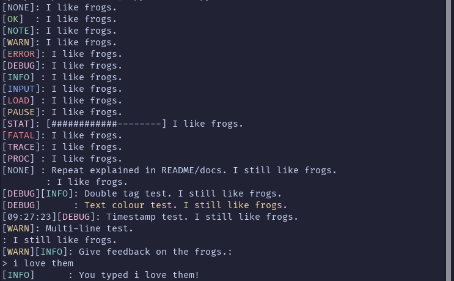

GitHub |
Website Repository |
PyPI |
jasperredis --
Home |
Docs
GitHub |
Website Repository |
PyPI |
jasperredis --
Home |
Docs
What is Cerbose?
Cerbose is a simple, cross-platform Python library that allows for fancy terminal text output and additional console-related features.
Showcase
Presented to you is an image of a test script, showcasing the following functions in Cerbose:
cprint— Tagged text, such as the[OK]:text preceding messages.cerbar— A simple progress bar function, like the[############--------]in the message with the[STAT]tag.cin— A simple function to take ✨stylish✨ user input in the terminal, such as the[WARN][INFO]: Give feedback on the frogs.:with an input spot.
Where to Get Cerbose?
Get Cerbose and more information on it at:
- The GitHub repository
- The PyPI project
- The documentation
Functions
cprint
cprint is Cerbose's main function; it outputs highly configurable, tagged text to the terminal. cprint has the following options in each call:
- NOTE: The documentation has more information.
- Required:
type: The tag the output uses.text: The actual text in the output.- Optional:
logfile: Logs the output to a specified file.textcol: Changes the colour of the text.stagtype: Adds a second tag to the output.timestamp: Adds a timestamp preceding the tags in the output.valonly: Returns a value containing the output instead of printing it.
mprint
mprint is essentially the same function as cprint, except it supports multiline output.
cerbar
cerbar is a function that can easily make ASCII progress bars to output in the terminal. cerbar has the following options in each call:
- NOTE: The documentation has more information.
- Required:
length: How many characters long the bar is (not including borders).total: The total value the bar represents (unshaded and shaded).fill: How much of the total is filled in (NOT A PERCENTAGE).- Optional:
perc: Adds the percentage filled either before or after the progress bar.count: Adds a counter (fill/total) either before or after the progress bar.
cin
cin is a function to take stylised user input. It returns what the user inputted. cin has the following options in each call:
- NOTE: The documentation has more information.
- Required:
textis the same as incprintandtagis the same astypeincprint.options: The possible options that can be inputted (or'any'for any input).- Optional:
logfile,logfeedback,textcol,stagtype, andtimestampare the same as incprint.lower: Recieves user input in lowercase.showop: If False, hides options from'o'/'opt'mode..
Other
Cerbose has other functions, however these are the main, meaningful functions.
Configuration
Cerbose's config files allow the following to be configured:
- Tag colours.
- Tag text.
- Custom tags.
- Symbols (e.g., brackets in tags/cerbar, fill-in in cerbar, etc.)
- Space repeat tolerance (how many times alignment settings can repeat before Cerbose tries to reset it)
- Time format in timestamps.
Language & Base
Cerbose is made in Python and uses the colorama library.